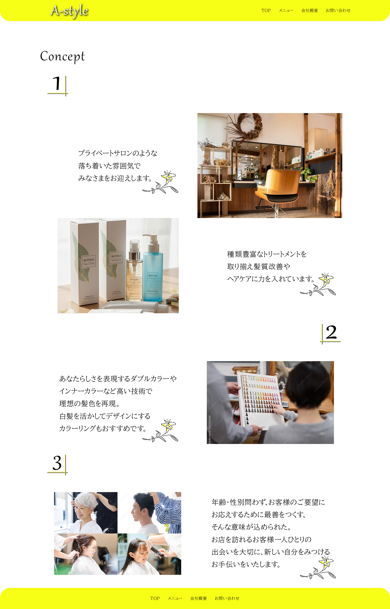
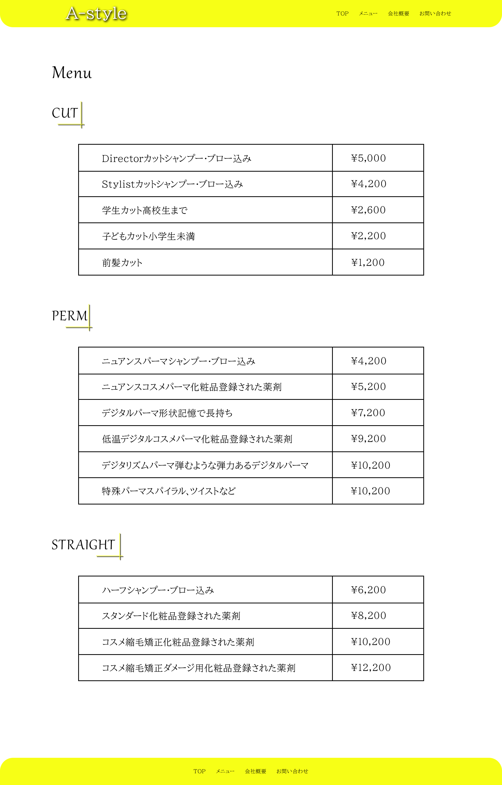
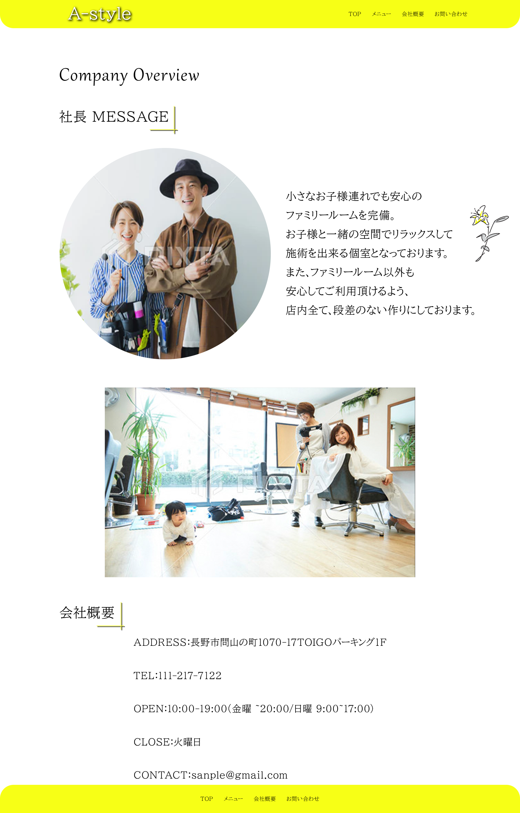
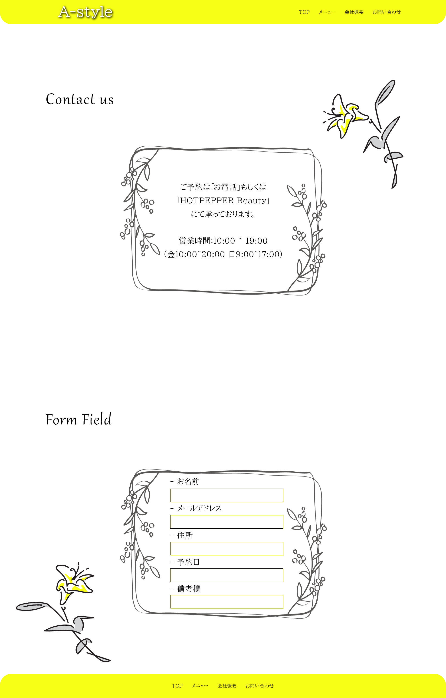

余白でつくる静けさ
情報を詰め込みすぎず、写真と文章をゆったり配置することで、落ち着いて過ごせるサロンの空気感を表現しました。
Project 01 / Website Design
落ち着いた時間を過ごせる、子ども連れ歓迎のプライベートヘアサロンを想定したWebサイトデザインです。

Final Design
Overview
Concept
日常から少し離れて、
親子でゆったり過ごせる
プライベート空間。
完全予約制のプライベートヘアサロンとして、落ち着いた空間や丁寧な施術の魅力を伝え、初めて訪れる方にも安心して予約してもらうことを目的に制作しました。
落ち着いたサロンを探している方に加え、周囲を気にせず子どもと一緒に通える美容室を探している方をターゲットにしています。
上質さだけに寄せすぎず、親しみや温かさも感じられる世界観を目指しました。
Design Points
情報を詰め込みすぎず、写真と文章をゆったり配置することで、落ち着いて過ごせるサロンの空気感を表現しました。
ベージュやアイボリーを中心にまとめ、上品さと親しみやすさの両方を感じられる配色にしています。
サロンの特徴、メニュー、店舗情報、お問い合わせへ自然に進めるよう、シンプルで分かりやすい導線を意識しました。
Design Gallery



横にスクロールしてご覧いただけます。